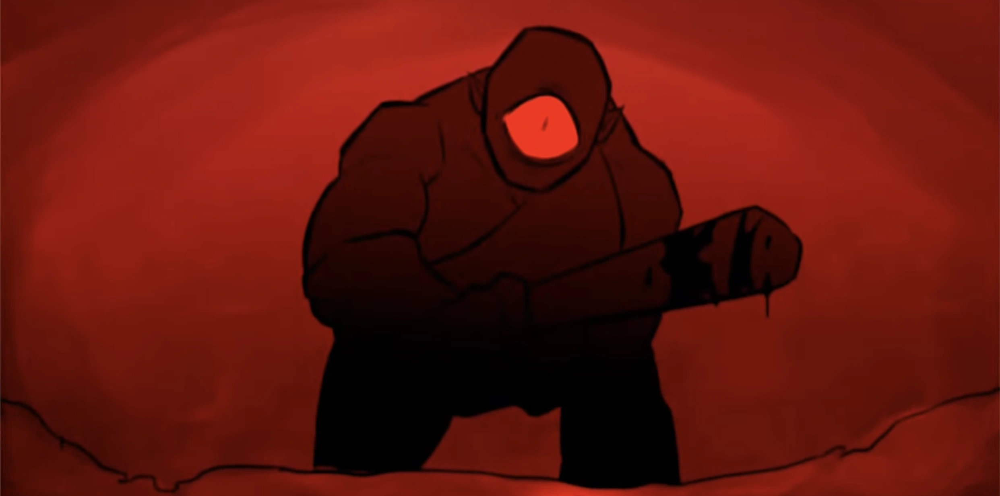

| Poliphemus | |
|---|---|
|  | |
| Zeichnung von Ximena Natzel | |
| Biografie | |
| Titel | Sohn von Poseidon |
| Beruf | Monster |
| Zugehörigkeit | Die Zyklopen |
| Poseidon | |
| Familie | Poseidon (Vater) |
| Die anderen Zyklopen | |
| Status | lebendig |
| Hinter den Kulissen | |
| Auftritte | Zyklopen Saga |
| Original Stimme | Jorge Rivera-Herrans |
| Deutsche Stimme | Mike Hinterlechner |
Poliphemus
Diese Schmerzen kriegt ihr tausendfach zurück. - Poliphemus (Poliphemus)
Poliphemus ist ein menschenfressender Zyklop, der als Hauptantagonist der Zyklopen Saga dient. Er ist der Sohn von Poseidon und Thoösa. Er hütet die Schafe in der Höhle, zu der die Besatzung am Ende der Troja-Saga von den Lotusfressern geführt wird.
Trivia
- Die Musik von Polyphemus in EPIC wird von einem Cello und einem Synthesizer untermalt, um zu zeigen, dass er ein übernatürliches Wesen ist.
- In der Mythologie sticht Odysseus Polyphemus einen brennenden Pfahl ins Auge, nachdem er ihn mit Wein übergossen hat und der Zyklop eingeschlafen ist. Selbst in seiner neugewonnenen Blindheit versucht der Zyklop, Felsbrocken auf das auslaufende Schiff des Odysseus zu werfen, was jedoch misslingt, so dass er zu seinem Vater Poseidon betet, um sich zu rächen, sobald der Mann seinen wahren Namen und seine Rolle preisgibt.
- Ein weiterer mythologischer Leckerbissen: Nachdem Odysseus auf die Frage von Polyphemus nach seinem Namen, nachdem er seine zweite Runde Wein getrunken hat, seinen Namen als „Niemand“ verraten hat, verspricht Polyphemus ihm als Freundschaftsdienst, "Niemand" als Letztes zu verspeisen, um den Wein zu erhalten, der ihn schließlich in den Schlaf wiegt.
- In mehreren Versionen der Zyklopengeschichte ist er derjenige, der sich um die Schafe kümmert, während die anderen Zyklopen auf Futtersuche gehen, weil er der unbeliebteste oder am wenigsten geduldete ist. Wenn er sein „Lieblingsschaf“ erwähnt, kann man das in vielen Geschichten als echten Spruch interpretieren, denn die Schafe sind wahrscheinlich die einzigen „Freunde“, die er hat, da seine Familie ihn nicht sonderlich zu mögen scheint.
Auftritte
-
Zyklopen Saga
- Poliphemus (Debüt)
- Überlebt
- Denkt stets an sie
-
Ozean Saga
- Grausamkeit (erwähnt)
-
Unterwelt Saga
- Die Unterwelt (erwähnt)
- Monster (erwähnt)